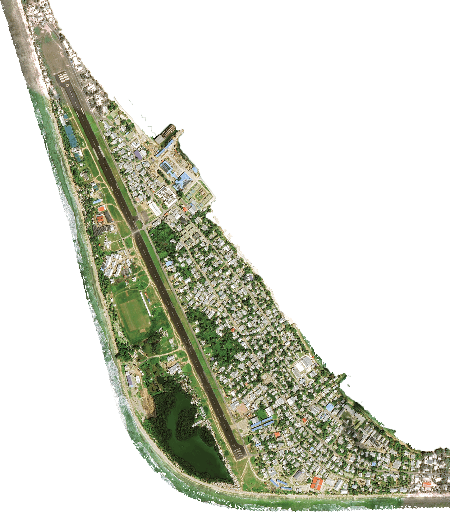

Remotely located in the Pacific Ocean between Hawaii and Australia sits the small island nation of Tuvalu. Tuvalu has been inhabited for 3000 years and has its own culture and language, but now this will be the last generation to live on Tuvalu. With an average elevation above sea level of only 2 meters Tuvalu is estimated to be 95% underwater at high tide by the year 2100.

While Tuvaluans have a place to go, New Zealand and Australia have committed to receive 355 Tuvaluans a year, at this rate Tuvalu will be depopulated in only 31 years. The Tuvaluan people have been given a place to go, but they don’t want to leave yet there will soon be nowhere for them to stay. With a population of only 10,000 it will be hard to keep this culture and language alive once Tuvalu is no longer inhabited.
The only hope in keeping Tuvalu habitable is land reclamation, but this is expensive and Tuvalu does not have the money to fund these kinds of projects. Tuvalu is left to work with other pacific island nations and push for wealthy nations to notice the impacts they are causing and to finance protections from their harm.